伟创业作为一家从事CNC加工多年的制造商，是国内实力强大的手术器械和医疗器械CNC加工医疗零件制造商之一。凭借成熟的技术和现代化的设备，我们已在医疗产品CNC加工的行业收获了大量成功案例。我们提供定制的医疗原型制作流程和各种对性能有重要作用的医疗组件制造服务。为满足医疗器械大批量、高精度的发展需求，高速、高精度、智能化、复合化、环保化一直是我国医疗数控加工的主要发展方向。我们始终提供高质量、精密的CNC 机加工医疗产品，交货准时、价格合理是我们的服务优势。
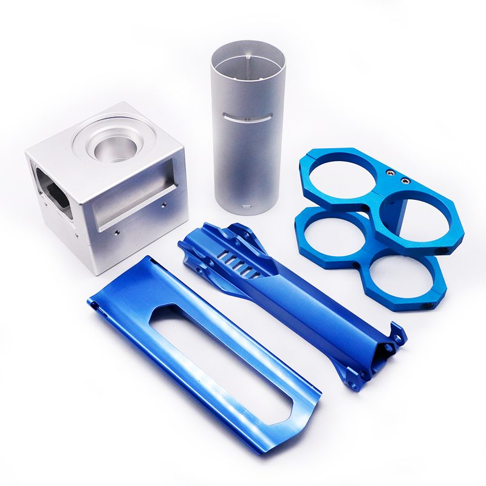
不锈钢——这是医疗行业最流行的材料。不锈钢具有多种卫生优势，这受到我们医疗行业客户的重视。它具有高水平的耐腐蚀性和耐用性，这在医疗行业中非常重要。
Nitinol ——Nitinol 是近年来获得医学界认可的合金之一。这是一种钛镍合金，以其形状记忆效应、出色的阻尼能力、生物相容性和超弹性而闻名。这些特性使其成为构建各种类型医疗设备的理想选择
钛– 钛被广泛用于制造植入物，因为它具有生物相容性。该材料具有广泛的有益特性，包括出色的柔韧性、弹性、强度、重量轻、无毒和耐腐蚀。我们提供医疗级钛和钛合金的数控加工
高精度——高质量的设计和生产团队确保每一个CNC加工的医疗部件的高精度
强大的产能——数百台现代化的医疗产品数控机床可承受大批量生产
快速生产—— 在医疗器械和零件的超精密加工方面拥有丰富的经验
质优服务——及时与客户沟通生产进度，准时交货
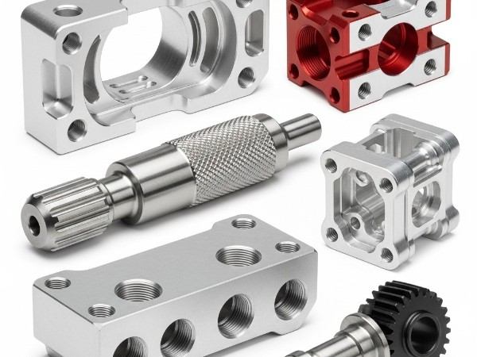
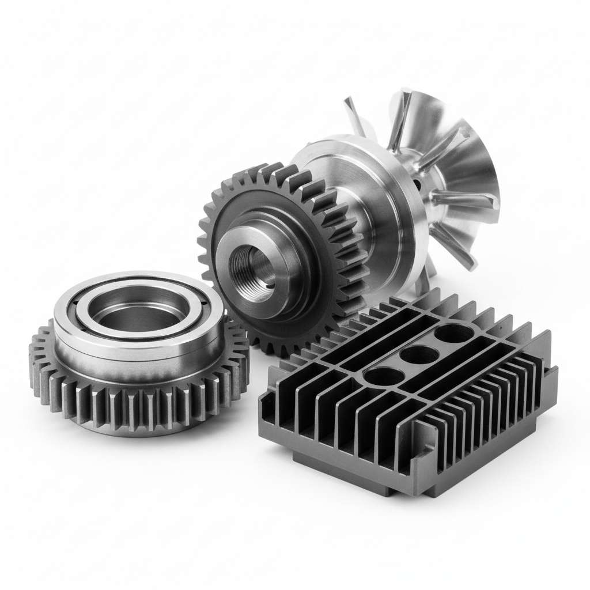
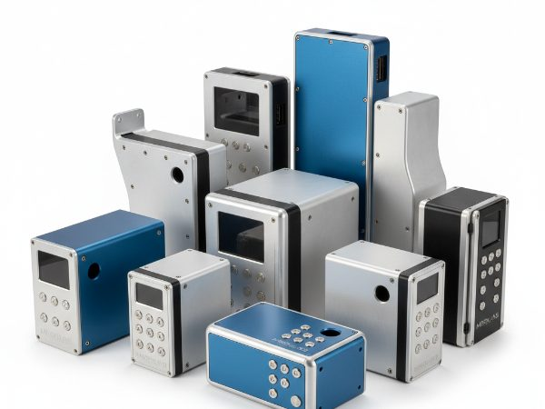
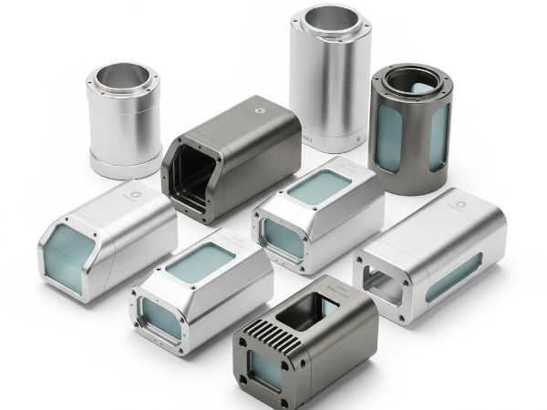
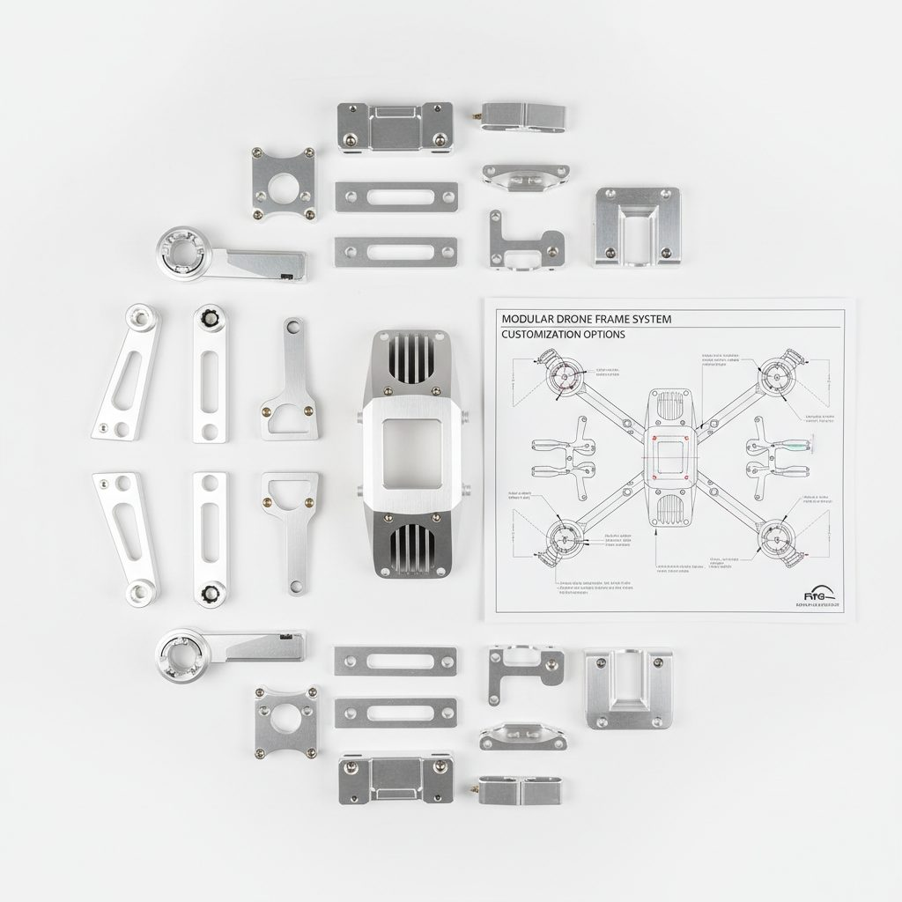
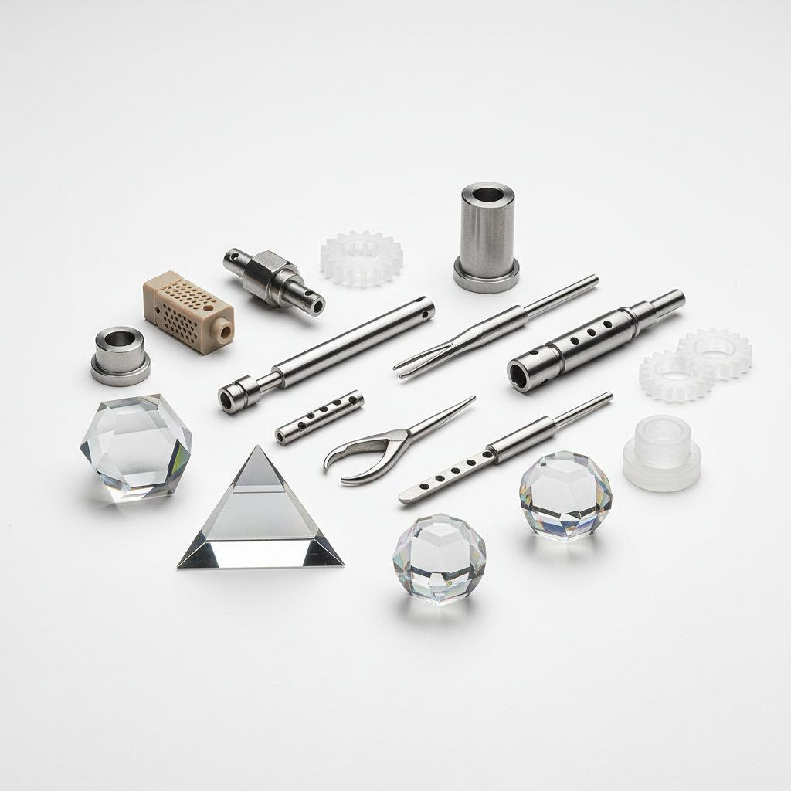
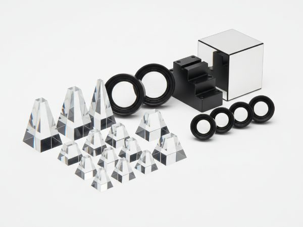
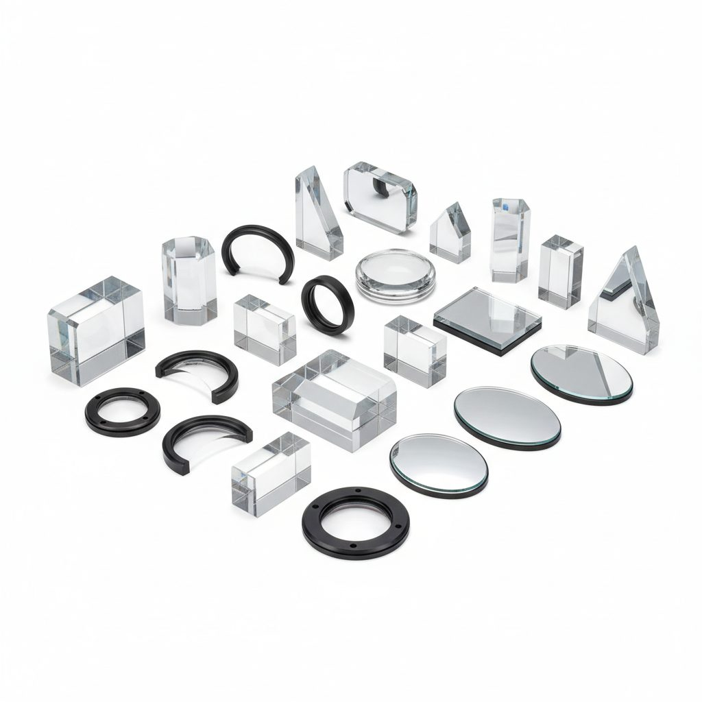

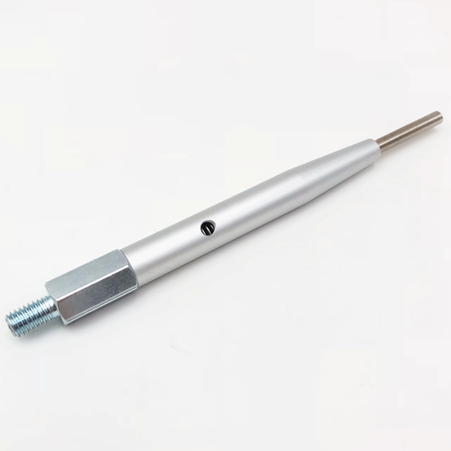

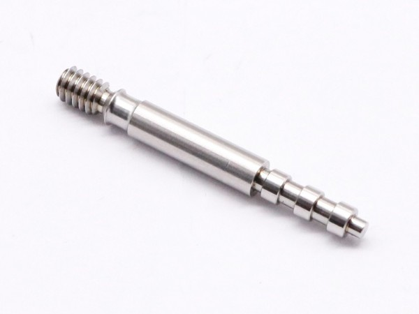
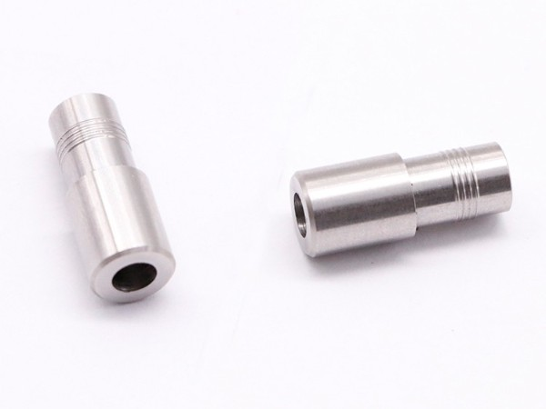
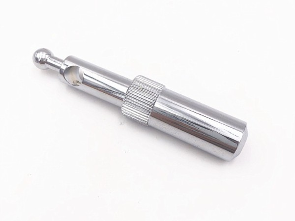
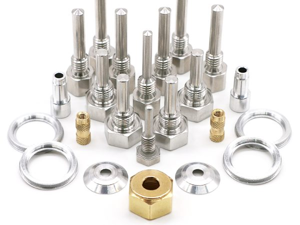